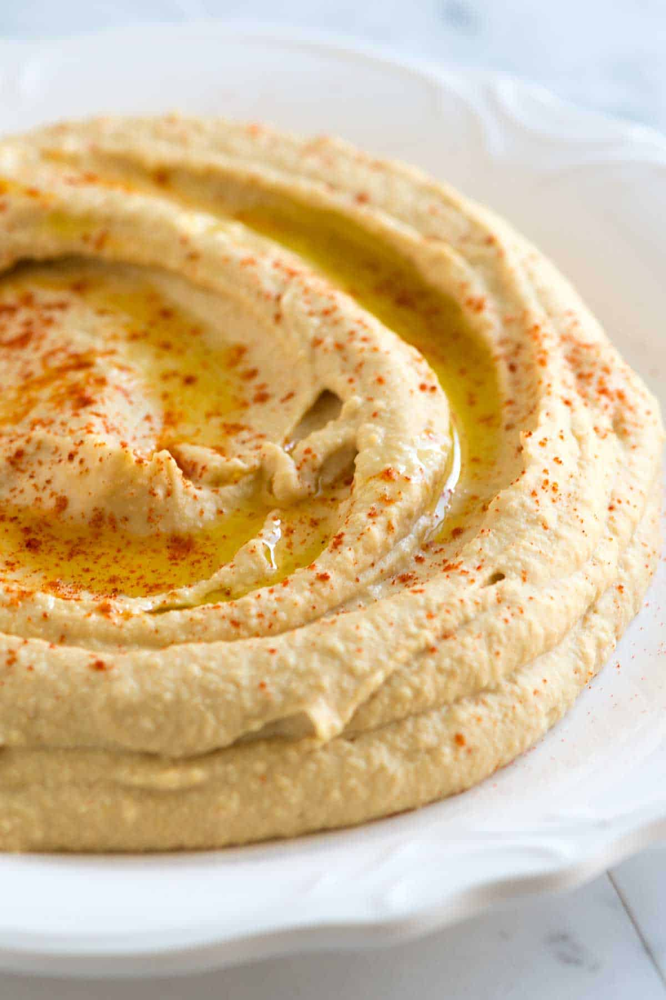

Hummus

Description
Hummus is a creamy, flavorful Middle Eastern dip made from blended chickpeas, tahini, lemon juice, and garlic.
Known for its smooth texture and nutty, tangy taste, it’s a popular appetizer or snack, often served with pita bread, vegetables, or as a spread.
With its balance of healthy fats, protein, and fiber, hummus is both nutritious and versatile, making it a staple in many Mediterranean dishes.
Ingredients
- Tahini (¼ cup)
- Lemon juice (1-2 tbsp)
- Garlic (1 clove)
- Chickpeas (1 cup, cooked)
Steps
- In a blender or food processor, combine chickpeas, tahini, lemon juice, garlic, olive oil, and salt.
- Blend until smooth, adding a little water if needed for desired consistency.
- Adjust seasoning with more salt or lemon juice as preferred.
- Serve with a drizzle of olive oil on top and sprinkle with paprika if desired.